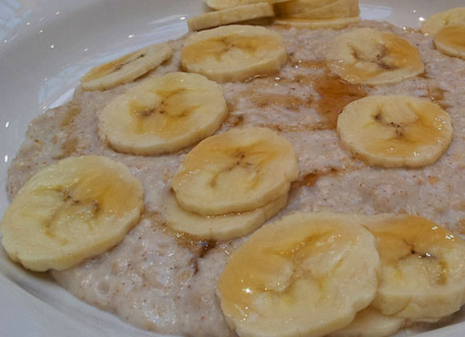

❤️
OncoRecetas
Nutrición con corazón
Inicio
Por tipo de cáncer
Opciones veganas
Prevención
Todas las recetas
Contacto
🥣 Avena con Plátano
Desayuno energético y fácil de digerir.
💰 S/ 4.00 💲
⏱️ 10 min • 👥 1 porción
🖨️ Imprimir Receta

📋 Ingredientes
1/2
taza de avena en hojuelas
1
plátano maduro
1
taza de leche de almendras (o agua)
1
cucharadita de canela en polvo
1
cucharadita de miel (opcional)
1
cucharada de semillas de chía (opcional)
1
cucharada de mantequilla de maní (opcional)
👩🍳 Preparación
Calentar líquido:
En una cacerola, calienta la leche de almendras (o agua) a fuego medio.
Agregar avena:
Añade la avena y la canela. Cocina a fuego medio durante 3-5 minutos, revolviendo constantemente.
Agregar plátano:
Corta el plátano en rodajas y añádelo a la avena.
Endulzar:
Si deseas, agrega la miel y revuelve hasta que se disuelva.
Finalizar:
Sirve caliente. Si usas mantequilla de maní, añádela encima.
💪 Información Nutricional (por porción)
240 kcal
Calorías
6g
Proteínas
5g
Grasas
45g
Carbohidratos
6g
Fibra
15mg
Vitamina C
🌟 Beneficios para Pacientes con Cáncer
Alto en fibra:
Ayuda a mantener la regularidad intestinal.
Plátano:
Rico en potasio, ayuda a rehidratar y calmar el estómago.
Proteínas:
Contribuye a la reparación de tejidos.
Alto en calorías:
Proporciona energía rápida en días de bajo apetito.
💡 Consejos y Variaciones
Si tienes mucositis, licúa la avena con el plátano hasta obtener una textura suave.
Para días muy difíciles, usa solo plátano y leche de almendras sin avena.
Si no tienes miel, usa un poco de azúcar moreno.
Para mayor valor nutricional, añade un poco de jengibre rallado.
Si necesitas más proteínas, añade 1 cucharada de proteína en polvo vegetal.